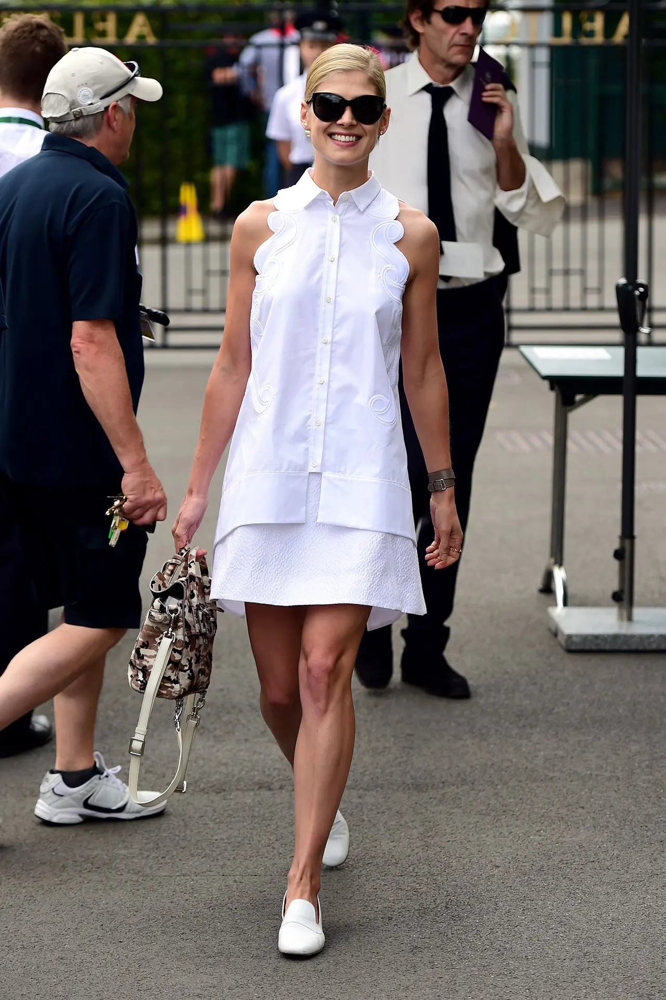
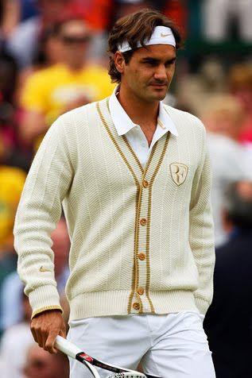
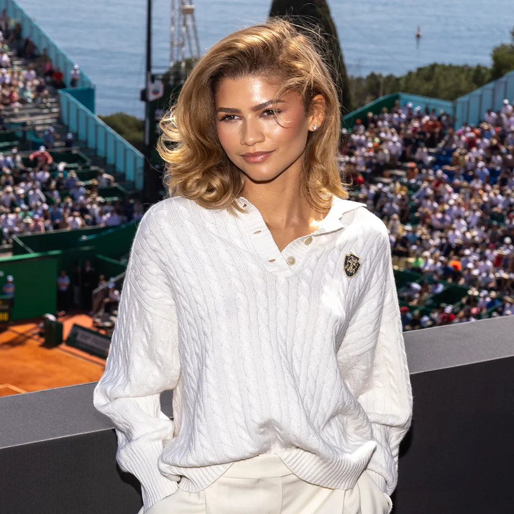
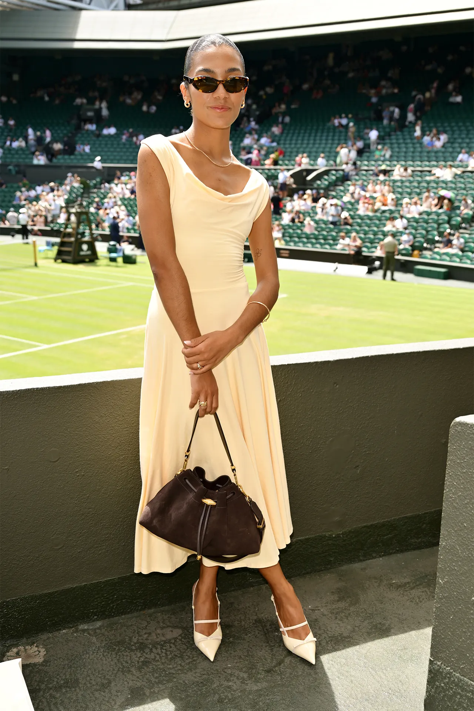
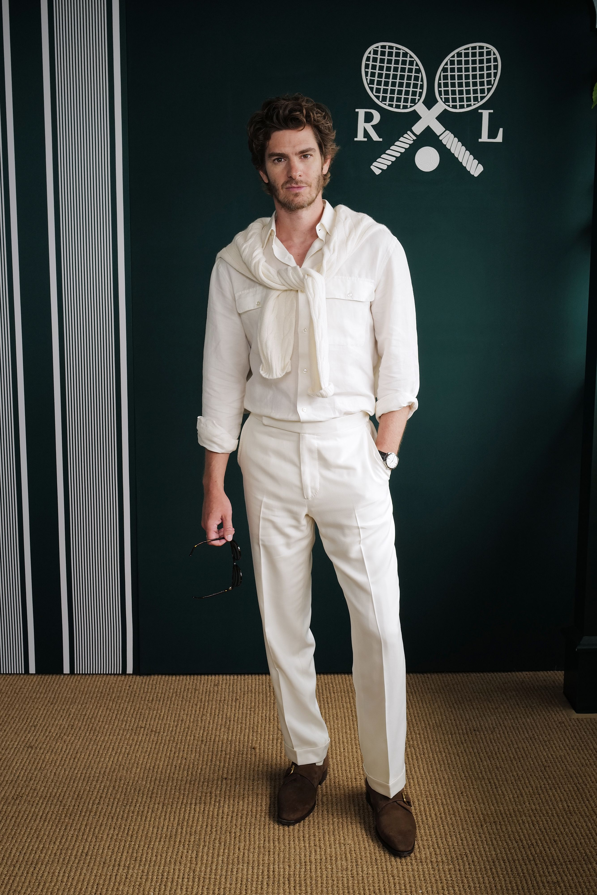
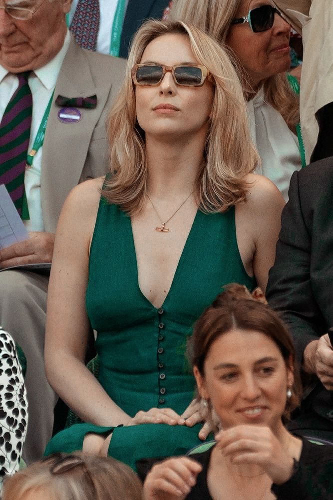

British classic
British classic
David Beckham · BOSS
Completo sartoriale impeccabile. L'eleganza British per eccellenza.
Timeless elegance, sull'erba più famosa del mondo — questa volta dal lato degli ospiti, non dei campioni.
Wimbledon Whites & more
Vestitevi seguendo l'eleganza senza tempo di Wimbledon: tonalità chiare e raffinate.
Inspo outfit
British classic
 Viola Wimbledon
Viola Wimbledon

Total white chic
Senza tempo
Tennis core
Pop di colore
Total white
Verde smeraldoQuando & dove